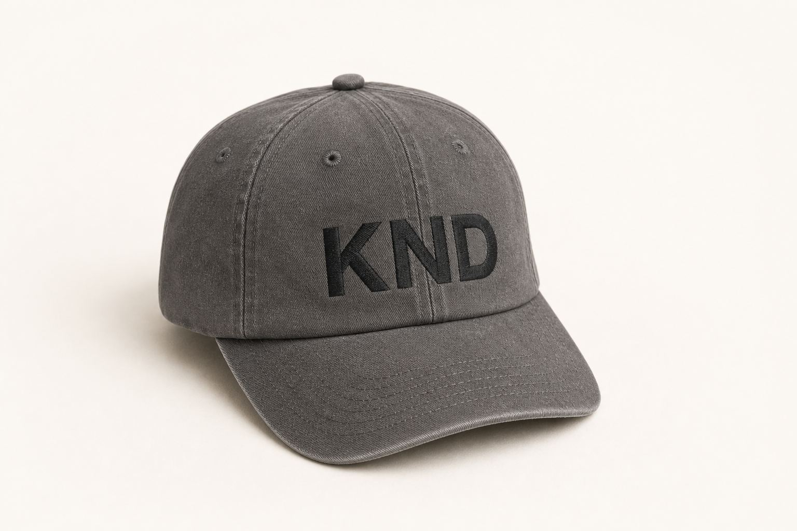
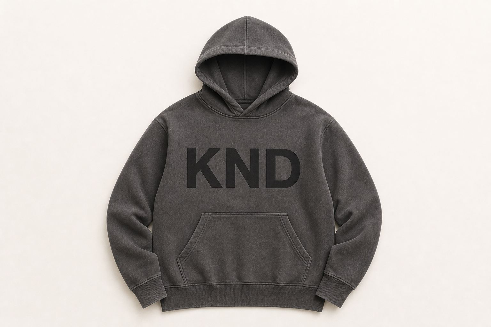
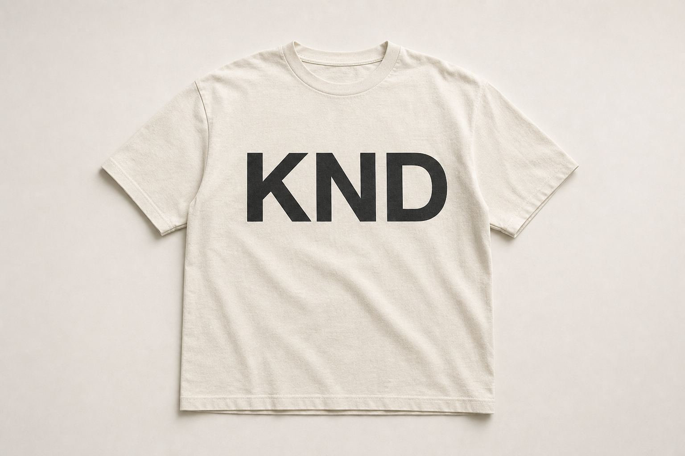
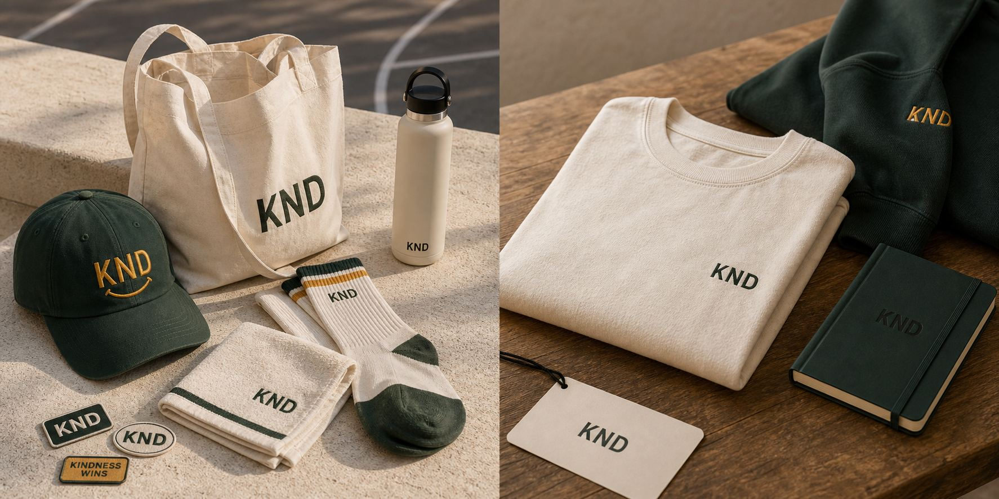

Character shows upin small things.
- What you carry.
- What you build.
- What you tolerate.
- What you refuse.

The point is already understood.
Now it gets to be worn.
The strongest people rarely need to announce themselves.
The room can feel it.
KND exists for the people who make kindness feel natural, durable, and shared.

A small mark for a clear standard.
Objects


Kindness is not a performance.
It is what remains when care becomes practice.
A feast of shared value and strength.
The shared smile.
The kept promise.
The good feeling people carry forward.

Product inside the moment.
Worn.
Shared.
- Caps.
- Hoodies.
- Totes.
- Towels.
KND KIDS
Kindness they can wear.


Color can carry character.